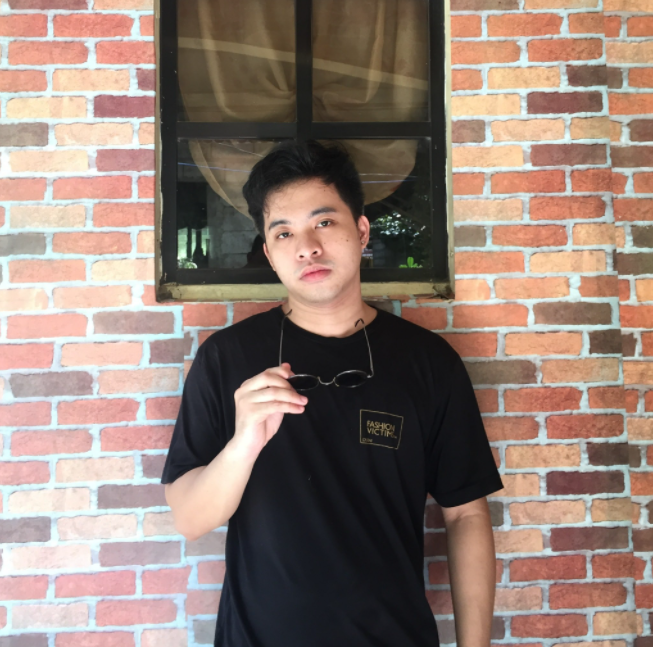

I am Rico John S. Obrero
4th Year Information Technology Student
ricojohn0402@gmail.com

Hi, im currently a 4th year student with the course Bachelor of Science in Information Technology in Central Luzon State University. Being an IT student is not easy but with proper determination, I managed to gain knowledge about IT industry. These knowledge include programming languages like Java,Python,Javascript,Database Management and C++. I also ahve enough knowledge on web programming like HTML and CSS.
College is hard because in this phase of our life, we will have a glimpse of the real world ahead of us as a student. With the help of our skilled teachers,I managed to survive in the previous 3 years of my college life. I hope to have a better career and work with my full potential soon.
Educational Background
STI San Jose Nueva Ecija
Senior High School
©2021 Rico John Obrero